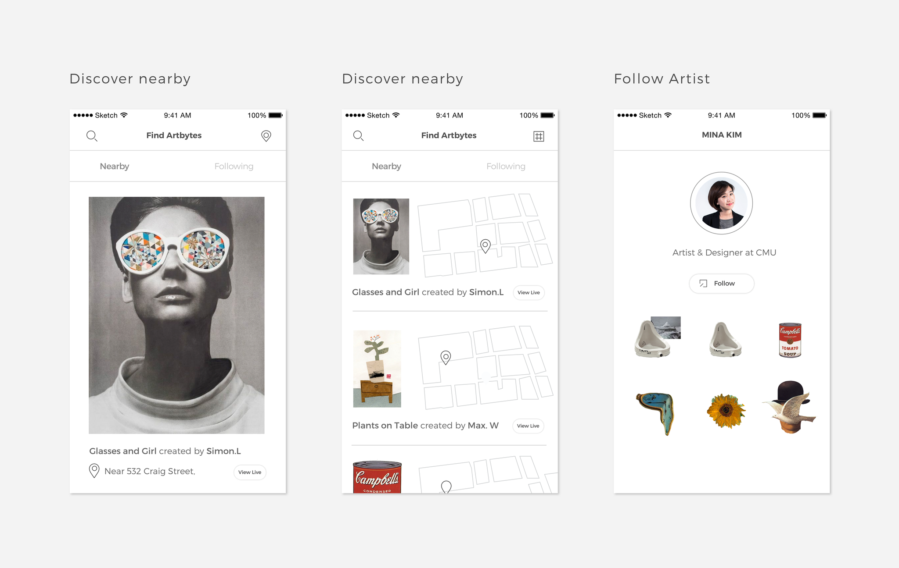

A community network tool to foster meaningful relationships among neighboring dog owners and dog lovers.
Along with Chris Liu, we concept a communication tool to build a trusted local neighboring community centered on dogs for neighboring dog owners and dog lovers. The purpose of such an application is to foster meaningful relationships among the stakeholders with the hope that a strong bond could be formed among them to alleviate problems that many dog owners encounter, such as Pet Sitting.

Exploratory Research: "What do you do about your dogs when you are away?"
After coming cross these numbers, we started the research with “What do you do about your dogs when you are away?” In the course of 2 months, we chatted with more than 50 dogs owners, and collected data from more than 120 pet owners to learn about their pains & concerns. We studied existing products, and learned that the current pet sitting service is fails in providing the trust layer and could be expensive.
//survey//
We built 4 personas to represent our Data
//personas//
We synthesized to get the following insights:
I1. The oragnice relationship of trading pet sitting duties among friends/neighbors
"I'm extremely lucky to have a circuit of friends with..."
I2. Trust can't be built overnight
In terms of art, access is limited to the museum or gallery, making the experience of viewing art exclusive. In fact, some of the most innovative and creative art is proprietary, making it difficult to engage with regularly.
I3. Other needs
While each gallery can provide an interesting experience, museum-goers often have difficulty connecting experiences across museums. Experiences within museums can become very isolated and solitary
I4. Pet lovers are willing to help out their friends!
While each gallery can provide an interesting experience, museum-goers often have difficulty connecting experiences across museums. Experiences within museums can become very isolated and solitary
I5. Pet owners' expectation for "Supports"
Opportunity Space:
Help Dog owners to expand the "Supporting Circle" by connecting them and construct a strong community centered dog owners & dog lovers network and foster meaningful relationships among them to potentially solve the problems such as pet sitting

Main Targeting Users:
Motivation:
Why it could work (Explain the motivation, needs, benefits for each stakeholder.)
Concept Validation: Do pet owners want to be friends?
We had a lot of questions and presented our ideas to potential users using storyboard & fake facebook event
Q1
Q2
Q3
Q4
Q5
Answer:they want to meet! But it has to be organice with least amount of the effort.
Pain-points in current way of meeting:
Ideation & Prototype Key touch points: How are we going to build the relationship?
Touch point 1: Provide Opportunity to meet & start the relatinoship
Ideation:
Touch point 2: Provoke ways to keep the conversation going
Ideation:
Meet Petbor:Key Final Decisions, for now.
After 3 rounds of user testings, and millions of times of changing in information architecture, we decided to make a mobile app with these final design decisions incorporated.
Onboarding
The process of creating an ArtByte involves first selecting an image from your gallery or taking a picture with your phone’s camera. The user then crops out part of the image by outlining the desired section with their fingers. we found that users considered the two-step process tedious and time-consuming. Participants became frustrated that the app repeatedly crashed during the cropping process, particularly during the fine crop process
Self-initiated location based events
Artbytes, Composition, AR show -> Artbytes, Megabytes -> Artbytes, Exhibition that conveys the concept of showcasing the user'sw work.
Discussion panel to provoke conversations within the community
We decided to remove the mandatory step of combining ArtBytes, allowing for more flexibility in the creation process. The first terms were updated to be ArtBytes, MegaBytes, and Exhibition. From medium-fidelity testing our group found that the original terms did not provide a consistent feeling because ArtBytes is not a real English word,while AR Show is an acronym.
Focus on strengthening your network
Features: Join friends for a walk, keep updated with daily activities, event suggestions, always changing content recommendations
Message system for easy help sending
We tried many different visual compositions and finalized decided on a more minimal visuals to let users focus on the content they are creating. (We were so in shock when the Instagram new design came out a week later after our final presentation!)
Blah!
User testing results and heuristic evaluation revealed that the existing application’s workflow is stringent and confusing for the users. There were too many mandatory steps for users to make an Exhibition, throughout which users were brought back to home screen without a clear affordance about the next steps. For example, the users would create an ArtByte
Iterations, iterations, iterations.
From Macro to Micro
Design is never finished and we are still in the current process of revisiting everything. During the design process, we stayed close to our users so we designed with them. We changed our ideas many times based on our user’s feedback.
We also worked on the information architecture millions of times to make sure everything could be more straightforward for our users.
We also worked on the information architecture millions of times to make sure everything could be more straightforward for our users.